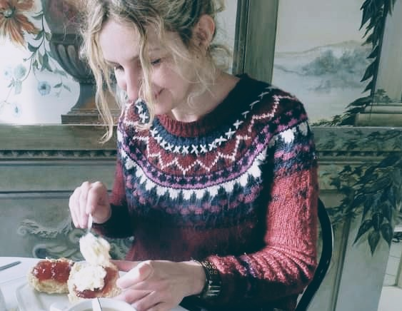
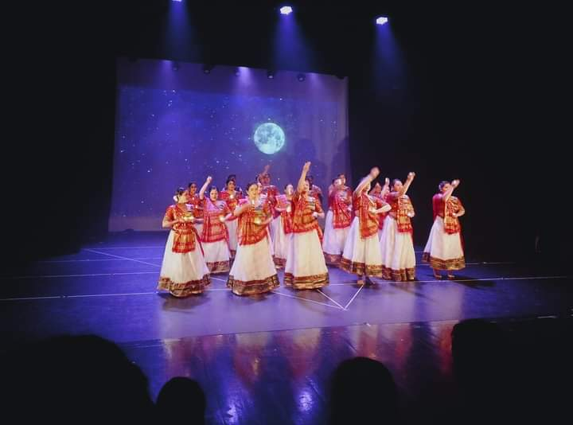
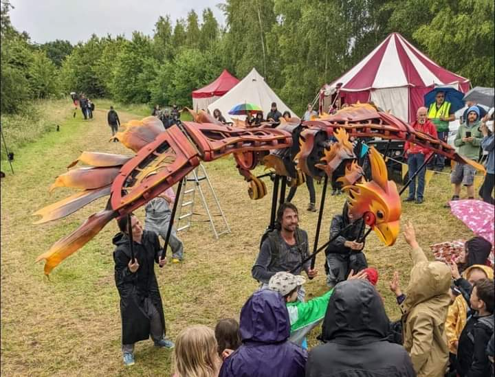
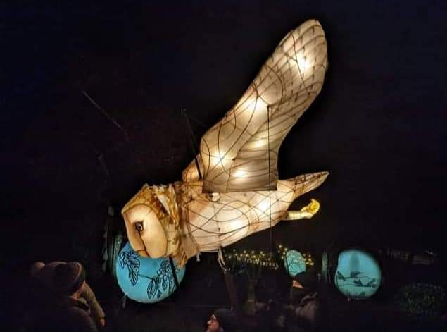

Arts and cultural funding bids can be highly complex and time consuming.
I have extensive experience of assessing and developing cultural & creative projects and organisations; and writing competitive arts & cultural sector bids.
I have been an independent consultant for over 12 years.
I offer a host of client services to both organisations and creative individuals.
If you prefer to write your application yourself, I offer a "critical friend" reading service where I will look over your application and discuss with you ways you can strengthen and improve it.
Whilst working for Arts Council England I amassed over 15 years' experience of working with the country's top arts venues, facilitating and soliciting strategic programmes and assessing projects.
I am a well-respected creative and cultural advocate, delivering strategic arts projects and utilising extensive regional, national and international contacts and networks.
I have recently secured Arts Council National Portfolio Organisation (NPO) funding equating to £3million, including supporting Bamboozle Theatre to get a 50% uplift.
I have also secured significant funding through Reaching Communities, Projects Grants and a range of Trust and Foundations like Garfield Weston and Esmee Fairbairn.

What I can do for you
I have been an independent consultant for over 10 years.
I offer a host of client services to both organisations and creative individuals.
I offer expertise and can support/mentor you in these areas.
Provide access support to submit Arts Council Project / Developing Your Creative Practice grants
I am an Arts Council Access Support worker.
I trained in counselling some time ago now, but the desire to listen and support has always been strong.
I recently worked on a research project and paper 'Meet Me Where I Am' that documented three neuro-different and dyslexic dancers' journeys to try and navigate the arts funding system.
Arts Council England will consider paying for an access support worker to support anyone who feels that they need it.
It could be because you identify as neuro-different, dyslexic, have anxieties about form filling, are struggling with the process and the effect it is having on your mental health.
There is a very simple form to fill in and the Arts Council usually process your request within 5 working days.
If you think you need and might qualify for Access Support click here for the form and examples of what you will need to provide.
Report writing - Fundraising Strategies, Forward Planning, Cultural Tourism
I have independently and with partners worked on providing expertise in Cultural Quarter development, Arts & Cultural Fundraising Strategies, Business Planning for creative and cultural organisations and how to work with artists to increase Cultural & Wildlife Tourism.
Delivering training and workshops
I regularly deliver lectures for the Royal College of Art and have delivered a series of workshops for Real Creative Futures covering topics such as "Are you funding ready?" and "Demystifying Arts Council funding". I can put together a day or half day that includes a presentation and mini surgeries to support a number of creatives who may want to start with some basic information to ascertain if they are funding ready.
Apply for a wide range of funding
Examples of successful bids include:
Arts Council England
Supporting successful NPO applications for Bamboozle Theatre, Aakash Odedra Dance Company, Wild Rumpus, UK Young Artists and NN Contemporary Art.
Numerous Project Grants and Developing Your Creative Practice Grants
Cultural Recovery Grants
Arts Council Touring
Arts Council National Significant Projects
Awards for All
Reaching Communities (£0.5 million successful bid for an Arts organisation)
The British Council (including securing significant funding for trips to China, South Korea and Digital Exchange projects)
Heritage Lottery Funding
Garfield Weston
Henry Smith Charitable Trust
The Bagri Foundation
Esmee Fairbairn Foundation
The Foyle Foundation
The D'Oyly Carte Charitable Trust
Children in Need
Sport England - Active Together
National Forest Community Grants
Local Authority Funding:
Shire's Community Grants
Nottinghamshire County Council Grants
Clients
I have a proven track record in working with high quality creative projects.
I know how to present you, your organisation and projects to significantly strengthen the likelihood of success.
"It has given me confidence in moving forward and developing my work."
"I think what I learned from the session will help me take my business idea forward."
"I am writing to let you know that I got the 'Developing your Creative Practice' funding, thank you so so so much for your help and your support."
Royal College of Art
Radnorshire Wildlife Trust
New Art Exchange / Real Creative Futures
De Montfort University

Winter Funk (in partnership with Aakash Odedra Company)
Future Makers
Aakash Odedra Dance Company
Design Nation
UK New Artists
Mercury Creatives
The Auxiliary
No Jobs in the Arts
London Turkish Speaking Theatre Festival
Middlesbrough Art Weekender

Bamboozle Theatre
The Carousel
Furthest From the Sea
Matt McGuinness & the MLC
Michael Forbes - Individual Artist
Market Harborough District Council
Leicestershire Promotions

Wild Rumpus (board member)
Cotesbach Educational Trust
Arts For Rutland
Oakham Town Council
Arts Fresco
Northamptonshire County Council and Renaissance East Midlands